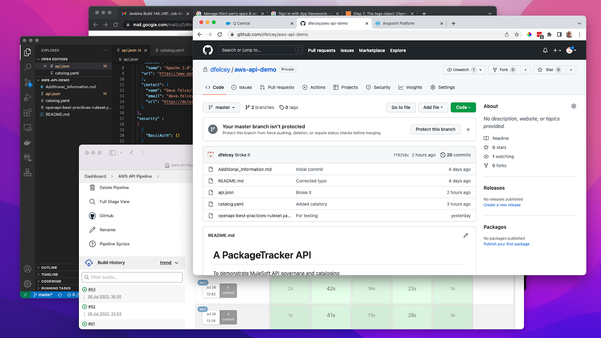
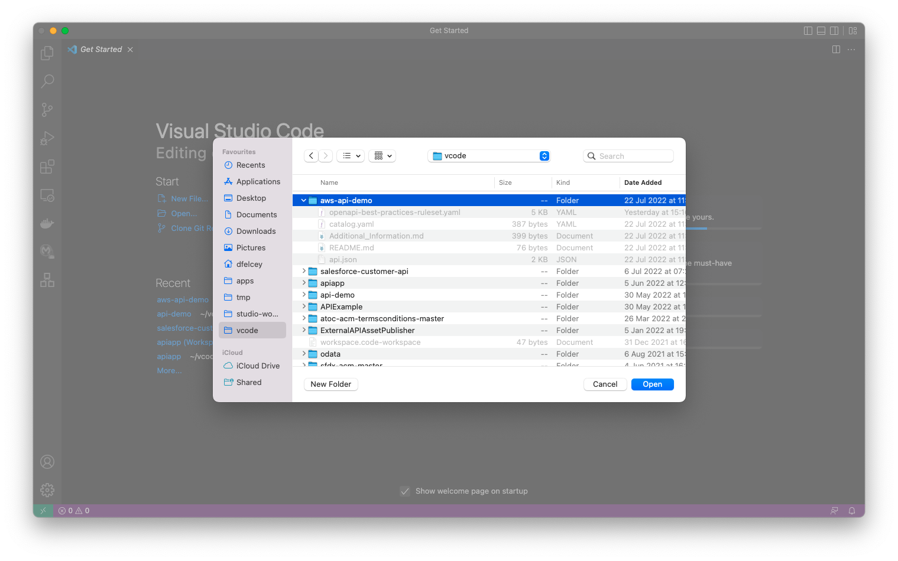
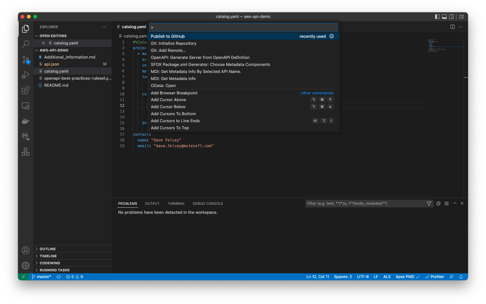
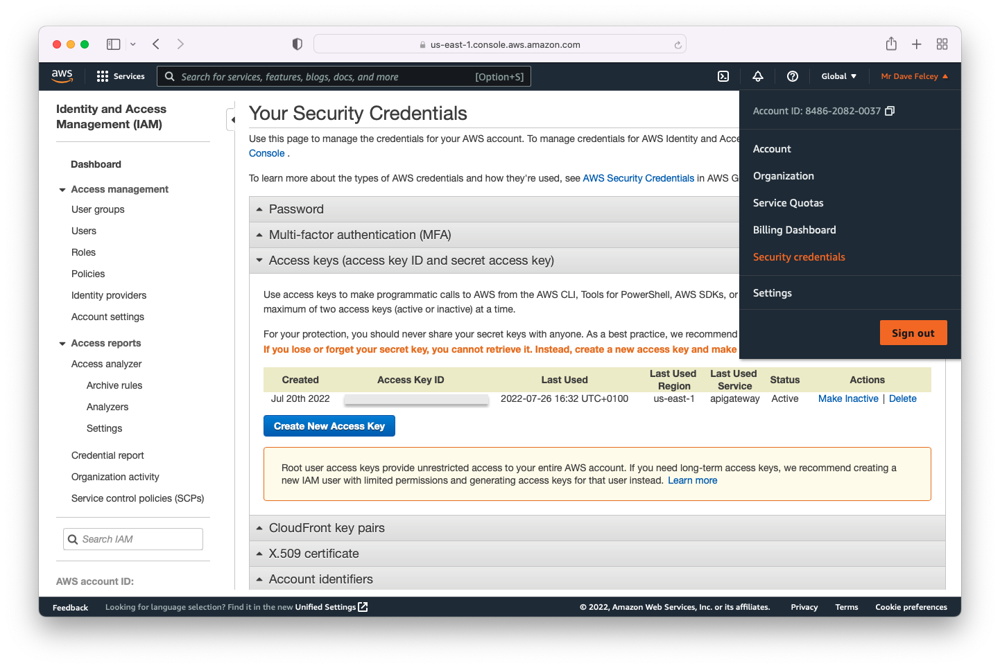
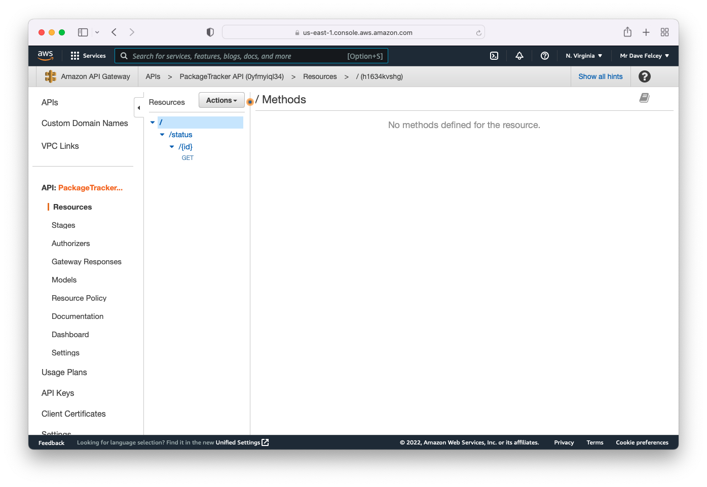
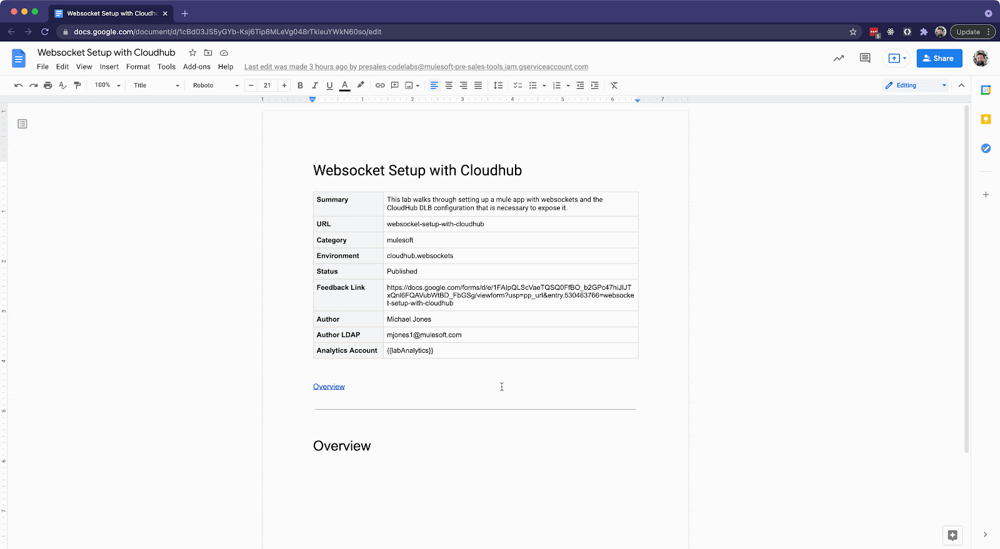

This lab will walk you through how MuleSoft's Universal API Management can be used to complement the development of APIs deployed to the AWS API Gateway, for instance to access Lambda services.
It will walk you through how to set up a simple CICD pipeline using GitHub and Jenkins, but this is only to show in principle how this can be done. It does not cover in-depth DevOps practices or all the additional steps that would be needed to productionize this process. Its focus is to show the "art of the possible".
Finally although this tutorial assumes the user is using Mac OSX, the scripts and instructions could easily be tweaked to run on Windows.

These are the prerequisites required for the tutorial;
npm install -g anypoint-cli@latestTo setup your project for testing;
Create a directory on your laptop and clone the GitHub project from here;
git clone https://github.com/dfelcey/aws-api-demo.git
In VSCode open the directory/folder you have just cloned the project to;

And then publish to GitHub (Ctrl + Shift + Command), (Note: you may be asked to authenticate with GitHub if you have not already done so). You can choose any project name you like, or just call it aws-api-demo;

To set up your AWS environment first check you have the AWS CLI installed. Enter aws –version and you should see something like this;
% aws --version
aws-cli/2.7.16 Python/3.9.11 Darwin/21.5.0 exe/x86_64 prompt/off
To use the AWS CLI you need to set up your credentials. This is outlined here, but basically if you login to the AWS console, select your account and the Security Credentials menu optio. To create new access keys click on Create New Access Key

Save the access credentials to use later as environment variables and from the command line
Run the aws configure command to add these to the AWS CLI credentials file as outline here;
aws configure
Once this has been done you can then create the initial version of the API in the AWS API Gateway - the Jenkins CICD pipeline will just update this. To create the initial version of the API, make sure you are in the project directory/folder that contains the api.json API definition and run the commands below;
AWS_PROFILE=default
aws apigateway import-rest-api \
--parameters endpointConfigurationTypes=REGIONAL \
--cli-binary-format raw-in-base64-out \
--fail-on-warnings \
--body 'file://api.json'
After running this command you should be able to see the API Gateway in the AWS console, similar to the screenshot below;

You are now ready to setup the Jenkins pipeline
When writing up your code lab, you'll likely want to preview it before you deploy to the test environment. To do so, install this plugin: https://chrome.google.com/webstore/detail/preview-codelab/lhojjnijnkiglhkggagbapfonpdlinji

When you want to put inline code, use the Courier New font like this!
If you want to include a code block, which has a copy button, create a 1x1 table and use the font Courier new:
//this is a code block
%dw 2.0
output application/json
---
"Hello world!"If you want to add a warning block, add a 1x1 table with this background color (3 from the left, and 3 down in the color picker):
If you want to do a green box, same thing but with this background color:
If you want to include a button instead of a simple link, create a link and set the highlight with this green: